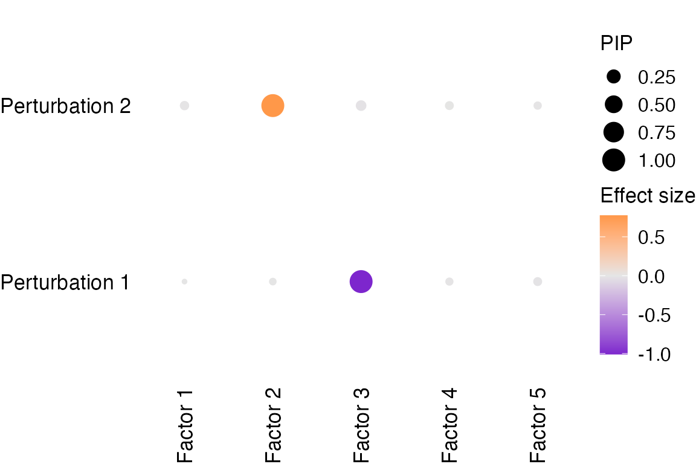
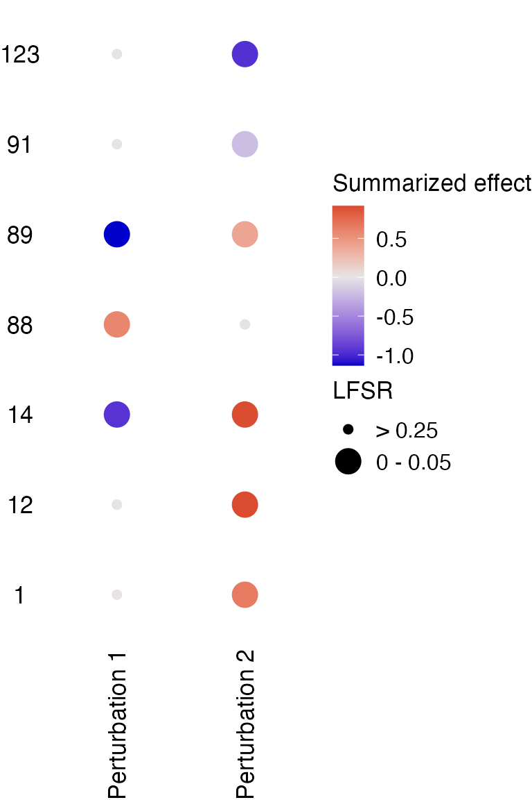

Applying GSFA in a simulated dataset
Yifan Zhou
2023-10-03
Source:vignettes/gsfa_intro.Rmd
gsfa_intro.RmdSimulate a data set
We generate a normal gene expression matrix \(Y\) with 400 samples and 600 genes and a binary perturbation matrix \(G\) with 2 types of perturbations according to:
\[G_{im} \overset{i.i.d.}{\sim} \text{Bern}(0.2), \phi_{ik} \overset{i.i.d.}{\sim} N(0,0.5) \Rightarrow Z = G \beta + \Phi,\] \[F_{jk} \overset{i.i.d.}{\sim} \text{Bern}(0.1), U_{jk} \overset{i.i.d.}{\sim} N(0, 0.5) \Rightarrow W_{jk}=F_{jk}\cdot U_{jk},\] \[E_{ij} \overset{i.i.d.}{\sim} N(0,1) \Rightarrow Y = ZW^T+E.\] Gene expression \(Y\) was generated from 5 factors, with each factor has ~0.1 of all genes with non-zero loading in it.
The true association effects between factors and perturbations, \(\beta\), are set to: \[\begin{pmatrix} 1 & 0 & 0 & 0 & 0 \\ 0 & 0.8 & 0 & 0 & 0 \end{pmatrix}\]That is, the 1st factor is associated with perturbation 1, and the 2nd factor associated with perturbation 2.
N: Number of samples, P: Number of genes, K: Number of factors, M: Number of perturbations in the simulated data.
beta_true <- rbind(c(1, 0, 0, 0, 0),
c(0, 0.8, 0, 0, 0))
sim_data <- normal_data_sim(N = 400, P = 600, K = 5, M = 2,
beta_true = beta_true,
pi_true = rep(0.1, 5),
psi_true = 0.5, G_prob = 0.2)Fit GSFA
Now we perform GSFA on the given normal expression data and binary
perturbation matrix using fit_gsfa_multivar().
Below, 5 factors are specified in the model, Gibbs sampling is initialized with truncated SVD for 1000 iterations, with the posterior means computed using the last 500 iterations.
prior_w_s, prior_w_r are prior parameters
of the gene loading on the factors, prior_beta_s, and
prior_beta_r are prior parameters of the effects of
perturbations on the factors. For details about the GSFA model and prior
specification, please see the GSFA paper and Supplementary Notes
(Section 1).
fit0 <- fit_gsfa_multivar(Y = sim_data$Y, G = sim_data$G,
K = 5, init.method = "svd",
prior_w_s = 10, prior_w_r = 0.2,
prior_beta_s = 5, prior_beta_r = 0.2,
niter = 1000, used_niter = 500,
verbose = T, return_samples = T)Initializing Z and W with SVD.
Iteration [50] finished.
Iteration [100] finished.
Iteration [150] finished.
Iteration [200] finished.
Iteration [250] finished.
Iteration [300] finished.
Iteration [350] finished.
Iteration [400] finished.
Iteration [450] finished.
Iteration [500] finished.
Iteration [550] finished.
Iteration [600] finished.
Iteration [650] finished.
Iteration [700] finished.
Iteration [750] finished.
Iteration [800] finished.
Iteration [850] finished.
Iteration [900] finished.
Iteration [950] finished.
Iteration [1000] finished.
Computing total effects for each perturbation-gene pair.
Computing posterior means of parameters.If the option return_samples = T, one can inspect the
traces of samples throughout the iterations stored in
fit0$*_samples slots.
If the sampling chain does not seem to have converged, we can
continue the Gibbs sampling from the previous run by passing the
previous fit object fit0 to
fit_gsfa_multivar(). Below, the sampling is resumed for
another 1000 iterations, with the posterior means recomputed using the
last 500 iterations.
(Note that we no longer need to specify k,
init.method and prior values this time.)
fit <- fit_gsfa_multivar(Y = sim_data$Y, G = sim_data$G,
fit0 = fit0,
niter = 1000, used_niter = 500,
verbose = F, return_samples = T)Computing total effects for each perturbation-gene pair.
Computing posterior means of parameters.Interpretation
Perturbation effects on factors
Note that factors are interchangeable, so their orders won’t necessarily match the original.
The estimated associations between factors and perturbations are:
Factor_1 Factor_2 Factor_3 Factor_4 Factor_5
1 -0.00112 -0.00274 -1.0200 -0.00343 -0.01090
2 -0.00768 0.77100 -0.0148 0.00630 -0.00176Factor 3 is associated with perturbation 1 with an absolute effect
size of ~1.
Factor 2 is associated with perturbation 2 with an absolute effect size
of ~0.8.
The PIPs (posterior inclusion probability, a measurement of certainty) of associations between factors and perturbations are:
Factor_1 Factor_2 Factor_3 Factor_4 Factor_5
1 0.04 0.042 1.000 0.032 0.080
2 0.07 1.000 0.096 0.060 0.048Associations with high certainty are:
Factor 3 ~ Perturbation 1 and Factor 2 ~ Perturbation 2.
Visualization of perturbation effects on factors:
dotplot_beta_PIP(fit, target_names = c("Perturbation 1", "Perturbation 2"))
Factor interpretation
Genes with non-zero loading on factors can be obtained by thresholding the gene PIP.
For example, non-zero genes in factor 2 are:
est_genes_factor2 <- which(fit$posterior_means$F_pm[, 2] > 0.95)Compare with genes truly in factor 2:
true_genes_factor2 <- which(sim_data$F[, 2] > 0)
num_olap <- length(intersect(est_genes_factor2, true_genes_factor2))
# Sensitivity:
sens <- num_olap / length(true_genes_factor2)
print(paste0("Sensitivity: ", signif(sens, digits = 3)))
# Specificity:
fpr <- (length(est_genes_factor2) - num_olap) / (sum(sim_data$F[, 2] == 0))
print(paste0("Specificity: ", signif(1 - fpr, digits = 3)))[1] "Sensitivity: 0.8"
[1] "Specificity: 1"Perturbation effects on genes
Differentially expressed genes (DEGs) can be detected by thresholding LFSR.
DEGs detected under Perturbation 1 and the sensitivity and specificity of discovery:
genes_detected1 <- which(fit$lfsr[, 1] < 0.05)
print(paste0(length(genes_detected1), " genes passed LFSR < 0.05."))
true_genes_factor1 <- which(sim_data$F[, 1] > 0)
num_olap1 <- length(intersect(genes_detected1, true_genes_factor1))
# Sensitivity:
sens1 <- num_olap1 / length(true_genes_factor1)
print(paste0("Sensitivity: ", signif(sens1, digits = 3)))
# Specificity:
fpr1 <- (length(genes_detected1) - num_olap1) / (sum(sim_data$F[, 1] == 0))
print(paste0("Specificity: ", signif(1 - fpr1, digits = 3)))[1] "46 genes passed LFSR < 0.05."
[1] "Sensitivity: 0.852"
[1] "Specificity: 1"DEGs detected under Perturbation 2 and the sensitivity and specificity of discovery:
genes_detected2 <- which(fit$lfsr[, 2] < 0.05)
print(paste0(length(genes_detected2), " genes passed LFSR < 0.05."))
true_genes_factor2 <- which(sim_data$F[, 2] > 0)
num_olap2 <- length(intersect(genes_detected2, true_genes_factor2))
# Sensitivity:
sens2 <- num_olap2 / length(true_genes_factor2)
print(paste0("Sensitivity: ", signif(sens2, digits = 3)))
# Specificity:
fpr2 <- (length(genes_detected2) - num_olap2) / (sum(sim_data$F[, 2] == 0))
print(paste0("Specificity: ", signif(1 - fpr2, digits = 3)))[1] "44 genes passed LFSR < 0.05."
[1] "Sensitivity: 0.8"
[1] "Specificity: 1"Visualization of the total effects each perturbation has on selected genes:
dotplot_total_effect(fit,
gene_indices = c(1, 12, 14, 88, 89, 91, 123),
target_names = c("Perturbation 1", "Perturbation 2"))
Session information
R version 4.2.1 (2022-06-23)
Platform: aarch64-apple-darwin20 (64-bit)
Running under: macOS Monterey 12.3
Matrix products: default
BLAS: /Library/Frameworks/R.framework/Versions/4.2-arm64/Resources/lib/libRblas.0.dylib
LAPACK: /Library/Frameworks/R.framework/Versions/4.2-arm64/Resources/lib/libRlapack.dylib
locale:
[1] en_US.UTF-8/en_US.UTF-8/en_US.UTF-8/C/en_US.UTF-8/en_US.UTF-8
attached base packages:
[1] stats graphics grDevices utils datasets methods base
other attached packages:
[1] ggplot2_3.4.3 dplyr_1.1.3 GSFA_0.2.8
loaded via a namespace (and not attached):
[1] Rcpp_1.0.11 plyr_1.8.8 bslib_0.5.1 compiler_4.2.1
[5] pillar_1.9.0 jquerylib_0.1.4 tools_4.2.1 digest_0.6.33
[9] gtable_0.3.4 jsonlite_1.8.7 evaluate_0.21 memoise_2.0.1
[13] lifecycle_1.0.3 tibble_3.2.1 pkgconfig_2.0.3 rlang_1.1.1
[17] cli_3.6.1 rstudioapi_0.15.0 yaml_2.3.7 pkgdown_2.0.7
[21] xfun_0.40 fastmap_1.1.1 withr_2.5.1 stringr_1.5.0
[25] knitr_1.44 desc_1.4.2 generics_0.1.3 fs_1.6.3
[29] vctrs_0.6.3 sass_0.4.7 systemfonts_1.0.4 grid_4.2.1
[33] rprojroot_2.0.3 tidyselect_1.2.0 glue_1.6.2 R6_2.5.1
[37] textshaping_0.3.6 fansi_1.0.4 rmarkdown_2.25 farver_2.1.1
[41] reshape2_1.4.4 purrr_1.0.2 magrittr_2.0.3 scales_1.2.1
[45] htmltools_0.5.6 colorspace_2.1-0 labeling_0.4.3 ragg_1.2.5
[49] utf8_1.2.3 stringi_1.7.12 munsell_0.5.0 cachem_1.0.8